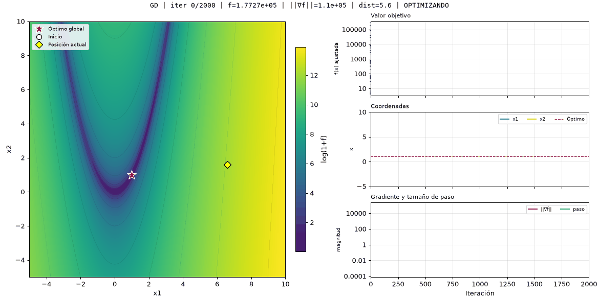
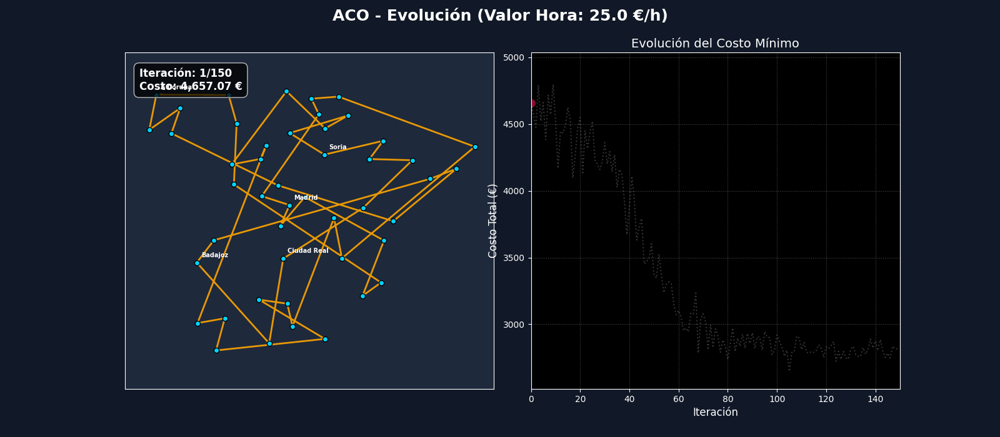

Optimización numérica, metaheurística y combinatoria: descenso por gradiente frente a algoritmos evolutivos, enjambres de partículas y evolución diferencial en funciones de prueba continuas, y colonias de hormigas frente a algoritmos genéticos en un recorrido real por España.
Ana María Barragán Ariza · Mauricio David Timaná Getial · Samuel Fernández Ortiz · Jhojan Esteban Jiménez Jaramillo
Optimizar consiste en encontrar los valores que minimizan o maximizan una función. En la práctica, la dificultad de esta tarea depende directamente de la geometría del problema: no es lo mismo recorrer una superficie suave que enfrentar valles estrechos o múltiples mínimos locales. Este trabajo compara dos enfoques distintos para resolver estos retos: los métodos basados en gradiente, como el descenso por gradiente (Nocedal y Wright, 2006), frente a las metaheurísticas poblacionales, que exploran el espacio de búsqueda evaluando únicamente la función objetivo.
En la primera parte se evalúa el desempeño de estos algoritmos sobre dos funciones continuas clásicas con dificultades opuestas. Por un lado, la función de Rosenbrock pone a prueba la convergencia en un valle curvo, estrecho y mal condicionado; por otro, la de Schwefel desafía la capacidad de exploración al presentar numerosos mínimos locales lejos del óptimo global. El objetivo es analizar qué familia logra mejores soluciones y a qué costo computacional según la topografía de cada función.
En la segunda parte se traslada la optimización a un escenario combinatorio real: el problema del viajante aplicado a las 47 capitales de provincia de la España peninsular. Aquí se comparan algoritmos genéticos y colonias de hormigas para hallar la ruta cerrada de menor costo total (combustible, peajes y tiempo del viajante valorado en \(v\) €/h), analizando cómo se transforma el recorrido óptimo a medida que cambia el valor del tiempo. Finalmente, el informe cierra con las conclusiones del estudio y los apartados sobre reproducibilidad y uso de herramientas de apoyo.
02 · Parte 1
Optimización numérica
Notación: \(\mathbf{x}=(x_1,\dots,x_d)\in\mathbb{R}^d\) es un punto del dominio, \(d\in\{2,3\}\) la dimensión, \(f\) la función objetivo y \(t\) el índice de iteración.
2.1 Funciones de prueba
Función de Rosenbrock
La función de Rosenbrock, llamada también función banana por la forma de sus curvas de nivel, fue propuesta como caso de prueba para algoritmos de optimización (Rosenbrock, 1960). En \(n\) dimensiones se define en la Ecuación 1:
El dominio \([-5,10]^n\) es el estándar en la literatura para esta función (Surjanovic y Bingham, 2013). El único mínimo global en 2D y 3D es \(\mathbf{x}^*=(1,\dots,1)\) con \(f(\mathbf{x}^*)=0\). La función no es convexa ni separable, aunque es localmente convexa cerca del óptimo. La Figura 1 muestra sus curvas de nivel: el mínimo está en el fondo de un valle parabólico estrecho y curvo cuyo fondo es casi plano, y el número de condición de la hessiana en el óptimo es \(\kappa\approx2.5\times10^{3}\) (sección 2.5). El gradiente analítico se calcula con la Ecuación 2:
Curvas de nivel de la función de Rosenbrock en dos dimensiones
Nota. La estrella roja marca el mínimo global en (1, 1). Fuente: elaboración propia a partir de la Ecuación 1.
Función de Schwefel
La función de Schwefel (Schwefel, 1981) es una de las más engañosas de la optimización continua y forma parte de las colecciones de referencia de funciones de prueba (Jamil y Yang, 2013). Se define en la Ecuación 3:
Su mínimo global es \(f(\mathbf{x}^*)\approx 0\) en \(x_i^*=420.9687\) para todo \(i\), es decir, en una esquina del dominio. La función no es convexa, pero es separable: cada coordenada aporta un término independiente, con 8 mínimos locales por eje, contando el del borde \(x_i=-500\), de modo que en \(d\) dimensiones hay \(8^d\) mínimos locales (64 en 2D y 512 en 3D). El segundo mejor valle de cada eje está al otro lado del dominio, cerca de \(x_i\approx-302.5\), y es solo 118.44 unidades peor. Para el descenso por gradiente se usó el gradiente analítico de la Ecuación 4:
La Figura 2 muestra la superficie de la función en 3D. Dentro de cada valle la función es suave, localmente convexa y bien condicionada, así que descender es fácil. Lo difícil es elegir el valle correcto.
Figura 2
Superficie tridimensional de la función de Schwefel
Nota. Superficie 3D interactiva \(z=f(x_1,x_2)\) generada a partir de la Ecuación 3 en una malla de 80 × 80 puntos. El mínimo global está en la esquina positiva del dominio. Fuente: elaboración propia.
2.2 Algoritmos
Descenso por gradiente (GD)
Es un método de primer orden: un único punto se mueve en dirección opuesta al gradiente con una tasa de aprendizaje \(\eta>0\) (Nocedal y Wright, 2006).
El algoritmo evolutivo con codificación real combina selección por torneo, cruce BLX-\(\alpha\) (Eshelman y Schaffer, 1993), mutación gaussiana con desviación decreciente y elitismo (Eiben y Smith, 2015). Cada padre se elige como el mejor de \(k=3\) individuos tomados al azar. Dos padres \(\mathbf{p}_1,\mathbf{p}_2\) generan un hijo \(\mathbf{h}\) muestreando cada componente en un intervalo extendido (Ecuación 6), y después cada componente se perturba con probabilidad \(p_m=0.1\) y desviación \(\sigma_t\) (Ecuación 7). Los 2 mejores individuos pasan intactos a la siguiente generación.
\(\text{hi}\) y \(\text{lo}\) son los límites del dominio y \(T\) el número máximo de generaciones.
Optimización por enjambre de partículas (PSO)
Cada partícula \(i\) tiene una posición \(\mathbf{x}_i\) y una velocidad \(\mathbf{v}_i\). La velocidad combina inercia, atracción hacia la mejor posición personal \(\mathbf{p}_i\) y atracción hacia la mejor posición del enjambre \(\mathbf{g}\) (Ecuación 8) (Kennedy y Eberhart, 1995). Las posiciones se recortan al dominio en cada paso.
\(w\) es el peso de inercia, \(c_1,c_2\) los coeficientes cognitivo y social y \(r_1,r_2\sim U(0,1)\).
Evolución diferencial (DE)
Para cada individuo \(\mathbf{x}_i\) se construye un vector mutante a partir de la diferencia entre otros dos individuos (Ecuación 9), se cruza con el padre de forma binomial (Ecuación 10) y el resultado reemplaza al padre solo si es mejor (Ecuación 11) (Storn y Price, 1997).
Como el paso de DE nace de diferencias entre individuos, es grande cuando la población está dispersa y pequeño cuando se concentra. Esta propiedad, que explora al principio y refina al final, será clave en la discusión.
2.3 Protocolo experimental y métrica de esfuerzo
Cada combinación de función, método y dimensión se ejecutó en 30 corridas independientes (semillas \(42+i\) para cada corrida \(i\)) partiendo de puntos iniciales aleatorios dentro del dominio. Para que la comparación sea justa, todos los algoritmos operaron bajo un presupuesto máximo común de \(20\,000\) evaluaciones equivalentes (\(E_{eq}\)) y una regla de parada unificada: cada corrida finaliza en cuanto alcanza el umbral de éxito \(f(\mathbf{x}) \le 10^{-3}\) o agota el presupuesto asignado (Tabla 1).
Tabla 1. Protocolo experimental e hiperparámetros de la Parte 1. Fuente: elaboración propia.
Alcanzar \(f(\mathbf{x}) \le 10^{-3}\) o agotar \(20\,000\ E_{eq}\)
Descenso por gradiente (GD)
\(\eta = 10^{-4}\) (gradiente analítico, Ec. 2)
\(\eta = 0.1\) (gradiente analítico, Ec. 4)
Algoritmo evolutivo (EA)
Población 40, torneo \(k=3\), cruce BLX-\(\alpha\) (\(\alpha=0.5\)), \(p_m=0.1\), 2 élites
Enjambre de partículas (PSO)
40 partículas, \(w = 0.7\), \(c_1 = c_2 = 1.5\)
Evolución diferencial (DE)
Población 40, factor \(F = 0.8\), cruce \(CR = 0.9\)
Los hiperparámetros de las metaheurísticas corresponden a configuraciones estándar de la literatura sin ajuste específico por función. En el descenso por gradiente, fue necesario ajustar la tasa de aprendizaje \(\eta\) en Rosenbrock debido a su alta curvatura: un barrido preliminar en \([-2,2]^2\) mostró que valores \(\eta \ge 0.0012\) provocan divergencia inmediata (NaN), mientras que \(\eta \le 0.001\) produce un avance lento (Tabla 2). Al ampliar el dominio experimental a \([-5,10]^d\), se fijó \(\eta = 10^{-4}\) para garantizar estabilidad numérica en todas las corridas.
Tabla 2. Sensibilidad del descenso por gradiente a la tasa de aprendizaje \(\eta\) en Rosenbrock 2D (dominio \([-2,2]^2\)). Fuente: elaboración propia.
\(\eta\)
Valor final de \(f\)
Comportamiento
0.0005
9.15
Convergencia muy lenta
0.0010
3.30
Convergencia lenta
0.0012
NaN
Divergencia
0.0020
NaN
Divergencia
0.0100
NaN
Divergencia
Métrica unificada de esfuerzo y tiempo esperado de éxito (ERT)
Dado que aproximar un gradiente en \(d\) dimensiones mediante diferencias centrales (Ecuación 12) requiere \(2d\) evaluaciones de la función objetivo (Nocedal y Wright, 2006), se unifica el costo computacional en evaluaciones equivalentes (\(E_{eq}\)) mediante la Ecuación 13, asignando \(4\ E_{eq}\) por paso de gradiente en 2D y \(6\ E_{eq}\) en 3D (criterio conservador frente al gradiente analítico, excluyendo registros gráficos y reevaluaciones de élites):
Equivalencia de evaluaciones y costo esperado por éxito
Adicionalmente, para evitar sesgos al comparar algoritmos que consumen pocas evaluaciones pero fallan con frecuencia, se reporta el Tiempo Esperado de Ejecución (\(\text{ERT}\)), definido como el promedio de evaluaciones equivalentes dividido entre la proporción de corridas exitosas (\(p_{\text{éxito}} \in [0,1]\)), que representa el esfuerzo real esperado para obtener una solución válida.
Equidad de la comparación
Todos los métodos parten del mismo presupuesto de \(20\,000\ E_{eq}\), el mismo umbral de éxito y las mismas 30 semillas. El descenso por gradiente gasta ese presupuesto en 5 000 pasos en 2D y 3 333 en 3D; las metaheurísticas, en un máximo de 500 generaciones de 40 individuos. El algoritmo evolutivo no reevalúa sus 2 élites, así que consume 38 evaluaciones por generación y nunca pasa de unas \(19\,040\ E_{eq}\). Ningún método recibe más esfuerzo que otro, y el ERT penaliza a los que gastan poco pero fallan.
Quedan dos asimetrías. El gradiente se calculó de forma analítica, de modo que cargarle \(2d\) evaluaciones por paso es un supuesto conservador que no cambia su tasa de éxito. Además, el descenso por gradiente sigue un único punto, mientras que las metaheurísticas reparten el mismo presupuesto entre 40 candidatos; el contraste natural sería un descenso con reinicios aleatorios bajo el mismo presupuesto, que queda como trabajo futuro.
2.4 Resultados
En las Tablas 3 y 4, \(M\) es la media, \(DE\) la desviación estándar, Mejor y Peor el menor y el mayor valor final de \(f\), Éxito el porcentaje de corridas con \(f \le 10^{-3}\), Iter. el promedio de iteraciones, \(E_{eq}\) el esfuerzo medio por corrida y \(\text{ERT}\) el costo esperado por éxito (Ecuación 13).
Rosenbrock: el valle que el gradiente no alcanza a recorrer
Incluso al igualar el presupuesto a \(20\,000\ E_{eq}\) (\(5\,000\) iteraciones en 2D y \(3\,333\) en 3D), el descenso por gradiente no alcanzó el umbral de éxito en ninguna de las 60 corridas (Tabla 3). La Figura 3 muestra que el algoritmo desciende rápido hacia el fondo del valle, pero luego avanza tan lentamente que agota todo el presupuesto sin llegar al mínimo. En contraste, PSO y DE alcanzan el umbral en el 100 % de las ejecuciones en ambas dimensiones con una fracción mínima del presupuesto (Figura 4).
Figura 3
Evolución del descenso por gradiente en Rosenbrock 2D

Nota. A la izquierda, la trayectoria sobre las curvas de nivel; a la derecha, la evolución del valor objetivo, de las coordenadas y de \(\lVert\nabla f\rVert\). Fuente: elaboración propia.
Figura 4
Evolución del enjambre de partículas en Rosenbrock 2D
Nota. A la izquierda, las partículas sobre las curvas de nivel; a la derecha, la evolución del mejor valor, de las coordenadas y de la diversidad de la población. Fuente: elaboración propia.
Tabla 3. Resultados bajo presupuesto unificado (\(20\,000\ E_{eq}\)) en Rosenbrock 2D y 3D (30 corridas por método y dimensión). Fuente: elaboración propia.
Método
M
DE
Mejor
Éxito
Iter.
\(E_f\)
\(E_{\nabla f}\)
\(E_{eq}\)
ERT
2D (\(2d=4\))
Descenso por gradiente
\(4.49\)
\(4.80\)
\(2.44\times10^{-1}\)
0 %
5 000
0
5 000
20 000
\(\infty\)
Algoritmo evolutivo
\(1.90\times10^{-1}\)
\(4.55\times10^{-1}\)
\(2.56\times10^{-5}\)
37 %
400
15 241
0
15 241
41 567
PSO
\(5.59\times10^{-4}\)
\(3.28\times10^{-4}\)
\(2.06\times10^{-5}\)
100 %
40
1 627
0
1 627
1 627
Evolución diferencial
\(4.81\times10^{-4}\)
\(2.76\times10^{-4}\)
\(2.24\times10^{-5}\)
100 %
48
1 969
0
1 969
1 969
3D (\(2d=6\))
Descenso por gradiente
\(1.97\)
\(2.72\)
\(8.27\times10^{-3}\)
0 %
3 333
0
3 333
19 998
\(\infty\)
Algoritmo evolutivo
\(1.25\)
\(2.12\)
\(8.58\times10^{-4}\)
7 %
468
17 830
0
17 830
267 455
PSO
\(9.15\times10^{-4}\)
\(1.67\times10^{-4}\)
\(1.47\times10^{-4}\)
100 %
344
13 809
0
13 809
13 809
Evolución diferencial
\(4.99\times10^{-4}\)
\(2.36\times10^{-4}\)
\(4.94\times10^{-5}\)
100 %
96
3 865
0
3 865
3 865
Como cada corrida se detiene al alcanzar \(f\le10^{-3}\), M y Mejor de las corridas exitosas solo indican cuánto se rebasó el umbral en el último paso y no sirven para ordenar los métodos; la comparación se hace por Éxito, \(E_{eq}\) y ERT. En negrita, el mejor resultado de Éxito, \(E_{eq}\) y ERT en cada dimensión.
Schwefel: un punto frente a una nube
En la superficie multimodal de Schwefel (Figuras 5 y 6), el descenso por gradiente acierta solo cuando su punto inicial cae por azar en la cuenca del óptimo global (1 de 30 corridas en 2D, y 0 en 3D), disparando su costo esperado por éxito (\(\text{ERT}\)) a más de \(581\,000\ E_{eq}\) en 2D. Por el contrario, DE resuelve el problema en apenas \(2\,129\ E_{eq}\) en 2D (100 % de éxito) y \(4\,687\ E_{eq}\) de \(\text{ERT}\) en 3D (97 % de éxito).
Figura 5
Trayectoria del descenso por gradiente sobre Schwefel 2D
Nota. Corrida individual con \(\eta=0.1\). Fuente: elaboración propia.
Figura 6
Evolución del enjambre de partículas sobre Schwefel 2D
Nota. Corrida individual con 40 partículas. Fuente: elaboración propia.
Tabla 4. Resultados bajo presupuesto unificado (\(20\,000\ E_{eq}\)) en Schwefel 2D y 3D (30 corridas por método y dimensión). Fuente: elaboración propia.
Método
M
DE
Mejor
Éxito
Iter.
\(E_f\)
\(E_{\nabla f}\)
\(E_{eq}\)
ERT
2D (\(2d=4\))
Descenso por gradiente
456.37
175.00
\(9.61\times10^{-4}\)
3 %
4 843
0
4 843
19 374
581 208
Algoritmo evolutivo
55.27
60.10
\(8.04\times10^{-6}\)
53 %
246
9 382
0
9 382
17 591
PSO
74.35
77.88
\(1.35\times10^{-5}\)
47 %
284
11 380
0
11 380
24 386
Evolución diferencial
\(3.43\times10^{-4}\)
\(2.75\times10^{-4}\)
\(2.54\times10^{-5}\)
100 %
52
2 129
0
2 129
2 129
3D (\(2d=6\))
Descenso por gradiente
667.84
222.50
118.44
0 %
3 333
0
3 333
19 998
\(\infty\)
Algoritmo evolutivo
82.91
88.79
\(2.67\times10^{-5}\)
43 %
301
11 488
0
11 488
26 511
PSO
109.88
105.90
\(1.81\times10^{-4}\)
37 %
339
13 591
0
13 591
37 065
Evolución diferencial
4.42
24.21
\(2.36\times10^{-5}\)
97 %
112
4 531
0
4 531
4 687
Como cada corrida se detiene al alcanzar \(f\le10^{-3}\), el valor Mejor solo indica cuánto se rebasó el umbral; M sí es informativa porque incluye las corridas atrapadas en valles locales. En negrita, el mejor resultado de M, Éxito, \(E_{eq}\) y ERT en cada dimensión.
2.5 Discusión
Al imponer un presupuesto idéntico de \(20\,000\ E_{eq}\) y detener cada ejecución al cruzar el umbral \(f \le 10^{-3}\), las Tablas 3 y 4 permiten aislar el impacto puro de la geometría de cada función sobre el esfuerzo real requerido (\(\text{ERT}\)).
Mal condicionamiento en Rosenbrock
Dado que Rosenbrock posee un único mínimo, el 0 % de éxito del descenso por gradiente responde principalmente al mal condicionamiento de su curvatura, agravado por usar un paso fijo y un único punto inicial. En el óptimo en 2D, la matriz hessiana presenta autovalores muy dispares:
Para mantener estabilidad numérica, el gradiente requiere \(\eta < 2/\lambda_{\max} \approx 0.002\) cerca del óptimo (Nocedal y Wright, 2006), lo que explica la divergencia en la Tabla 2. Al fijar \(\eta=10^{-4}\) para evitar inestabilidades en \([-5,10]^d\), el avance a lo largo del valle (gobernado por \(\lambda_{\min}\approx 0.40\)) resulta demasiado lento para alcanzar el umbral incluso tras \(5\,000\) pasos en 2D (\(20\,000\ E_{eq}\)) o \(3\,333\) en 3D (Figura 3).
Por el contrario, las metaheurísticas no dependen de la escala del gradiente. Tanto PSO como DE alcanzaron el 100 % de éxito en 2D y 3D con apenas una fracción del presupuesto: en 2D, PSO convergió en \(1\,627\ E_{eq}\) y DE en \(1\,969\ E_{eq}\) (menos del 10 % del límite permitido). Al pasar a 3D, DE mantuvo una alta eficiencia (\(3\,865\ E_{eq}\)), superando por un factor de 3.6 a PSO (\(13\,809\ E_{eq}\)). El algoritmo evolutivo (EA) cayó del 37 % al 7 % de éxito en 3D (\(\text{ERT} = 267\,455\)), evidenciando que su combinación de elitismo y mutación decreciente pierde la diversidad necesaria para seguir un valle curvo en mayor dimensión.
Multimodalidad en Schwefel
En Schwefel, el problema del descenso por gradiente no es la convergencia local, sino la falta de exploración global. Al seguir únicamente la pendiente desde su punto inicial, queda atrapado en el primer valle que encuentra (Figura 5), acertando el óptimo global entre los \(8^d\) valles solo una vez en 2D (3 % de éxito) y ninguna en 3D. Aunque en esa única corrida exitosa converge rápido, su costo esperado por éxito es de \(\text{ERT} = 581\,208\ E_{eq}\) en 2D e infinito en 3D.
Las metaheurísticas superan este límite al distribuir 40 candidatos simultáneamente por todo el dominio. Cuando EA y PSO fallan, quedan atrapados en valles señuelo (múltiplos de \(118.44\)), elevando su \(\text{ERT}\) a \(17\,591\) y \(24\,386\ E_{eq}\) en 2D (\(26\,511\) y \(37\,065\) en 3D). En cambio, DE destaca con un 100 % de éxito en 2D (\(\text{ERT} = 2\,129\ E_{eq}\)) y 97 % en 3D (\(\text{ERT} = 4\,687\ E_{eq}\)): al generar pasos a partir de diferencias entre individuos (Ecuación 9), mantiene saltos amplios mientras la población explora distintas cuencas y los reduce automáticamente cuando logra concentrarse en el óptimo global.
Síntesis comparativa
La Tabla 5 resume cómo interactúa la geometría de cada problema con las dos familias de algoritmos estudiadas.
Tabla 5. Relación entre la geometría de cada función y el desempeño de cada familia de métodos. Fuente: elaboración propia.
Propiedad geométrica
Descenso por gradiente
Metaheurísticas poblacionales
Convexidad local dentro de un valle
Ventaja: convergencia rápida una vez dentro de la cuenca correcta.
Refinamiento más lento al no explotar derivadas.
Mal condicionamiento (Rosenbrock)
Fracaso (0 % éxito): el paso estable es diminuto y agota los \(20\,000\ E_{eq}\) sin recorrer el valle.
Ventaja: inmunes a la escala del gradiente; PSO y DE logran 100 % de éxito en menos de \(4\,000\ E_{eq}\) (2D).
Ventaja: exploración simultánea de múltiples valles; DE logra 97–100 % de éxito (\(\text{ERT} \le 4\,687\ E_{eq}\)).
Incremento de dimensión (2D → 3D)
Degradación total en tasa de éxito.
DE apenas duplica su costo en Rosenbrock (\(1\,969 \to 3\,865\ E_{eq}\)); PSO lo multiplica por 8.5 (\(1\,627 \to 13\,809\ E_{eq}\)) y en 3D cuesta \(3.6\times\) más que DE; EA cae del 37 % al 7 % de éxito.
En conclusión, bajo igualdad de esfuerzo computacional, el descenso por gradiente resulta competitivo únicamente si se inicializa cerca de una cuenca convexa bien condicionada, mientras que las metaheurísticas poblacionales —y en particular la evolución diferencial— garantizan exploración global y estabilidad ante topografías complejas.
03 · Parte 2
Optimización combinatoria
3.1 Formulación
El vendedor debe visitar las 47 capitales de provincia de la España peninsular y volver a la ciudad de salida. Se excluyen Palma, Las Palmas de Gran Canaria y Santa Cruz de Tenerife por ser insulares, y Ceuta y Melilla por no ser provincias ni ser accesibles por carretera desde la península. Sea \(V=\{1,\dots,n\}\) el conjunto de \(n=47\) capitales y \(C_{ij}\) el costo de ir de la ciudad \(i\) a la ciudad \(j\). Un recorrido cerrado es una permutación \(\pi\) de \(V\), y el problema consiste en encontrar la permutación de costo mínimo (Applegate et al., 2006):
De forma equivalente, con variables binarias \(x_{ij}=1\) si el recorrido va directamente de \(i\) a \(j\), el problema se escribe como el programa entero de la Ecuación 16 (Dantzig et al., 1954):
Las dos primeras restricciones obligan a entrar y salir una vez de cada ciudad; la tercera elimina subciclos. Como los tiempos de viaje de ida y vuelta no son iguales, \(C_{ij}\neq C_{ji}\) y el problema es un TSP asimétrico. Fijando la ciudad de salida, hay \((n-1)! = 46! \approx 5.5\times10^{57}\) recorridos distintos; incluso si los costos fueran simétricos quedarían \(46!/2\). Revisarlos todos es imposible, por eso se usan metaheurísticas.
El costo de cada tramo suma el combustible, los peajes y el tiempo del vendedor (Ecuación 17):
\(d_{ij}\) es la distancia por carretera en km, \(t_{ij}\) el tiempo de viaje en horas, \(c\) el consumo del vehículo en L/100 km, \(p\) el precio del combustible en €/L, \(P_{ij}\) el peaje del trayecto en € y \(v\) el valor de la hora del vendedor en €/h.
El valor de la hora \(v\) traduce cada hora de viaje a dinero. Reúne el costo laboral directo (salario, prestaciones y sobrecostos) y el costo de oportunidad, es decir, las ventas que se dejan de hacer mientras se conduce; la literatura sobre el valor del tiempo de viaje en Europa lo estudia con detalle (Wardman et al., 2016). Con \(v=0\) solo importan el combustible y los peajes. Cuanto mayor es \(v\), más conviene ahorrar horas aunque cueste más en carretera.
3.2 Datos y fuentes
Para garantizar la reproducibilidad experimental y permitir la ejecución sin conexión de los algoritmos, todos los parámetros geográficos y económicos se recopilaron previamente en matrices estáticas. La Tabla 6 detalla el origen, los valores adoptados y la fecha de consulta de cada componente que integra la función de costo total (Ecuación 17).
Tabla 6. Fuentes y parámetros del modelo económico de la Parte 2. Fuente: elaboración propia.
Componente
Especificación y obtención
Fuente
Consulta
Distancias (\(d_{ij}\)) y tiempos (\(t_{ij}\))
Matriz de \(47 \times 47\) pares obtenida mediante el servicio Table de OSRM en modo conducción sobre la red vial de OpenStreetMap.
Tarifas en euros calculadas automáticamente con HERE Routing API v8 para los \(1\,081\) pares de capitales, sin carga manual. 644 pares tienen peaje y el máximo es \(84.15\text{ €}\). La matriz es simétrica y se contrastó con el catálogo de la Red de Carreteras del Estado.
Consumo de \(c = 5.5\text{ L}/100\text{ km}\) en gasolina, el valor con el que se calcularon todas las rutas. PENDIENTE: nombrar el vehículo cuyo consumo homologado es 5.5 L/100 km y enlazar su ficha técnica.
Tarifa base de \(25.00\text{ €/h}\) (coste laboral efectivo y costo de oportunidad comercial según la Encuesta Trimestral de Coste Laboral); análisis paramétrico en \(0, 15, 25, 35\) y \(60\text{ €/h}\).
Con 5.5 L/100 km y 1.55 €/L, cada kilómetro cuesta 0.085 € en combustible, que es justo la relación entre las columnas de distancia y combustible de la Tabla 8. Los peajes se obtuvieron consultando la API de HERE para cada par de capitales, de modo que la matriz cubre todos los tramos.
Dado que los tiempos de desplazamiento entre dos capitales difieren según el sentido de circulación, el problema se formuló como un TSP asimétrico en formato estándar TSPLIB95 (Reinelt, 1991), manteniendo simétrica únicamente la matriz de peajes. Para cada escenario de valoración temporal \(v \in \{0, 15, 25, 35, 60\}\text{ €/h}\), se construye una matriz de costos \(C(v)\) de \(47 \times 47\) aplicando la Ecuación 17:
Escenario \(v = 0\text{ €/h}\): El tiempo del conductor no tiene peso económico; la optimización solo busca el orden de visita que menos combustible y peajes acumula.
Escenarios \(v \in \{15, 25\}\text{ €/h}\): Representan rangos operativos realistas del coste laboral comercial, equilibrando el gasto directo en ruta con la duración del viaje.
Escenarios \(v \in \{35, 60\}\text{ €/h}\): El costo del tiempo domina la función objetivo y conviene asumir tramos con peaje si reducen las horas al volante.
Al finalizar cada ejecución, la mejor ruta encontrada se evalúa de forma desagregada sobre las matrices individuales de distancia, tiempo, combustible y peajes para analizar cómo cambia la estructura del recorrido entre escenarios. Las tarifas de peaje corresponden al periodo de consulta indicado.
El trayecto entre cada par de ciudades es fijo: es el que devuelve el enrutador. Los algoritmos no eligen entre autopista y carretera convencional dentro de un tramo; solo deciden el orden de las ciudades. Cuando el valor de la hora cambia, la ruta cambia porque conviene encadenar otros pares de ciudades, no porque un mismo tramo se recorra por otra vía. Además, distancias y tiempos vienen de OSRM y los peajes de HERE, dos enrutadores que no siempre trazan el mismo camino.
3.3 Algoritmos y protocolo experimental
Para resolver el problema combinatorio se emplearon dos metaheurísticas poblacionales implementadas mediante la librería scikit-opt (Guo, s. f.): optimización por colonia de hormigas y algoritmos genéticos.
Colonia de hormigas (ACO)
En este enfoque, cada hormiga \(k\) construye un recorrido completo de forma incremental. Estando en la ciudad \(i\), selecciona la siguiente ciudad \(j\) entre las no visitadas (\(\mathcal{N}_i\)) con una probabilidad que pondera la feromona acumulada \(\tau_{ij}\) y la visibilidad heurística \(\eta_{ij}=1/C_{ij}\) (Ecuación 18). Al finalizar cada iteración, el rastro se evapora a tasa \(\rho\) y cada hormiga deposita feromona en los arcos recorridos de forma inversamente proporcional al costo total \(L_k\) de su ruta (Ecuación 19) (Dorigo et al., 1996).
\[\tau_{ij} \leftarrow (1-\rho)\,\tau_{ij} + \sum_{k=1}^{m}\Delta\tau_{ij}^{k}, \qquad \Delta\tau_{ij}^{k} = \begin{cases}1/L_k & \text{si la hormiga } k \text{ usó el tramo } (i,j)\\ 0 & \text{en otro caso}\end{cases} \tag{19}\]
Los exponentes \(\alpha\) y \(\beta\) regulan el equilibrio entre la memoria colectiva y la información de costos locales, permitiendo que incluso desde la primera iteración se favorezcan los tramos más económicos.
Algoritmo genético (GA)
El algoritmo genético evoluciona una población de permutaciones válidas de las 47 ciudades (Goldberg, 1989). En cada generación, los individuos se seleccionan según la aptitud inversa a su costo \(L(\pi)\) y se recombinan mediante operadores diseñados para preservar la validez del recorrido sin repetir ciudades: el cruce parcialmente mapeado (PMX) (Goldberg y Lingle, 1985) y la mutación por inversión, que selecciona dos posiciones (\(a < b\)) e invierte el subsegmento comprendido entre ellas (Ecuación 20).
A diferencia de ACO, la población inicial del GA se genera de manera puramente aleatoria, utilizando la matriz de costos únicamente para evaluar la aptitud de los recorridos completos.
Protocolo de ejecución
Ambos algoritmos se ejecutaron bajo igualdad de esfuerzo computacional: \(60\) individuos/hormigas durante \(150\) iteraciones, lo que equivale a \(9\,000\) evaluaciones de recorridos por corrida (Tabla 7).
Tabla 7. Configuración experimental e hiperparámetros de la Parte 2. Fuente: elaboración propia.
Parámetro
Colonia de hormigas (ACO)
Algoritmo genético (GA)
Tamaño de población
60 hormigas
60 individuos (permutaciones)
Iteraciones
150
150 generaciones
Presupuesto de evaluaciones
\(9\,000\) recorridos por escenario
Hiperparámetros específicos
\(\alpha = 1.0\), \(\beta = 2.0\), \(\rho = 0.1\)
Cruce PMX, mutación por inversión (\(p_m = 0.1\))
Ejecuciones
1 corrida determinista (semilla 42) por cada valor de \(v\)
3.4 Resultados
Las Figuras 7 y 8 muestran cómo evoluciona la mejor ruta de cada método con el valor de referencia \(v=25\) €/h: a la izquierda de cada animación, el recorrido sobre el mapa de España; a la derecha, la curva del costo mínimo. La estrella roja marca la ciudad de salida.
Figura 7
Evolución de la mejor ruta de la colonia de hormigas con \(v=25\) €/h

Nota. Costo final de 2 740.42 €. Fuente: elaboración propia.
Figura 8
Evolución de la mejor ruta del algoritmo genético con \(v=25\) €/h
Nota. Costo final de 3 667.56 €. Fuente: elaboración propia.
La Tabla 8 desglosa el costo de la mejor ruta que encontró cada método con cada valor de la hora. ACO gana en los cinco casos: el algoritmo genético es entre un 32 % y un 46 % más caro; dicho de otro modo, las rutas de ACO son entre un 24 % y un 32 % más baratas.
Tabla 8. Resultados de la colonia de hormigas y del algoritmo genético según el valor de la hora del vendedor. Fuente: elaboración propia.
\(v\) (€/h)
Método
Costo total (€)
GA frente a ACO
Distancia (km)
Tiempo (h)
Combustible (€)
Peajes (€)
Tiempo vendedor (€)
Cómputo (s)
0
ACO
631.83
—
7 160.21
87.50
610.43
21.40
0.00
22.00
GA
922.94
+46.1 %
9 831.64
119.05
838.18
84.76
0.00
0.93
15
ACO
1 886.73
—
6 617.88
81.57
564.18
99.01
1 223.54
22.05
GA
2 700.16
+43.1 %
9 815.96
119.13
836.79
76.41
1 786.96
0.93
25
ACO
2 740.42
—
6 797.46
83.44
579.50
74.96
2 085.96
22.21
GA
3 667.56
+33.8 %
9 182.18
111.65
782.82
93.48
2 791.26
0.94
35
ACO
3 546.32
—
6 733.58
82.53
574.04
83.76
2 888.52
21.95
GA
5 138.39
+44.9 %
10 011.57
119.87
853.51
89.45
4 195.43
0.94
60
ACO
5 616.02
—
6 746.54
82.70
575.14
78.61
4 962.27
22.07
GA
7 421.74
+32.2 %
9 049.61
108.56
771.52
136.72
6 513.50
0.93
Costo total = combustible + peajes + \(v\) · tiempo, con la matriz de peajes de HERE. Una sola corrida por fila, con semilla 42. «GA frente a ACO» es el sobrecosto relativo del GA. Por el redondeo del desglose, recalcular el total puede diferir hasta en 0.27 €.
La Figura 9 reúne la mejor ruta final de la colonia de hormigas para los cinco valores de la hora: los recorridos son compactos y casi no se cruzan.
Figura 9
Mejor ruta final de la colonia de hormigas para cada valor de la hora
Nota. Fuente: elaboración propia.
3.5 Sensibilidad al valor de la hora (\(v\))
Al variar el parámetro \(v\), se observa un cambio estructural en la ruta óptima encontrada por ACO entre \(0\) y \(15\text{ €/h}\). Cuando el tiempo no tiene costo (\(v = 0\text{ €/h}\)), la colonia elige un orden de ciudades con muy pocos peajes: abona apenas \(21.40\text{ €}\) en peajes, pero recorre \(7\,160.21\text{ km}\) en \(87.50\text{ h}\). En cambio, con \(v = 15\text{ €/h}\), el algoritmo asume \(99.01\text{ €}\) en peajes para reducir el trayecto en \(542.33\text{ km}\) y ahorrar \(5.93\text{ h}\) de conducción (Tabla 8).
Dado que el costo total de un recorrido fijo \(R\) es una función lineal respecto a \(v\) (Ecuación 21), es posible evaluar cada una de las rutas halladas bajo los cinco escenarios de valoración temporal:
La Tabla 9 presenta esta evaluación cruzada para las cinco rutas obtenidas por ACO. La ruta generada para \(v = 0\text{ €/h}\) solo resulta óptima cuando el tiempo no se valora; a partir de \(v = 15\text{ €/h}\), la ruta hallada en dicho escenario domina sistemáticamente a todas las demás, incluso a las obtenidas específicamente para \(25, 35\) y \(60\text{ €/h}\). Que las corridas con 25, 35 y 60 €/h no encontraran esa ruta muestra que una sola corrida de ACO no garantiza el óptimo. Las rutas comparten entre 26 y 35 de sus 47 tramos, y sus diferencias se deben al azar de la búsqueda.
Tabla 9. Evaluación cruzada de las rutas de ACO bajo distintos valores de la hora (costos en euros). Fuente: elaboración propia a partir de la Tabla 8 y la Ecuación 21.
Ruta hallada con
\(F+P\) (€)
\(T\) (h)
\(v=0\)
\(v=15\)
\(v=25\)
\(v=35\)
\(v=60\)
0 €/h
631.83
87.50
631.83
1 944.33
2 819.33
3 694.33
5 881.83
15 €/h
663.19
81.57
663.19
1 886.74
2 702.44
3 518.14
5 557.39
25 €/h
654.46
83.44
654.46
1 906.06
2 740.46
3 574.86
5 660.86
35 €/h
657.80
82.53
657.80
1 895.75
2 721.05
3 546.35
5 609.60
60 €/h
653.75
82.70
653.75
1 894.25
2 721.25
3 548.25
5 615.75
Valores calculados mediante la Ecuación 21 a partir de \(F+P\) y \(T\) de la Tabla 8 (pueden existir variaciones menores de hasta \(0.27\text{ €}\) por redondeo de \(T\)). En negrita, el menor costo para cada escenario de \(v\).
¿A partir de qué valor cambia la ruta?
Cada ruta es una recta en \(v\), así que la mejor para cada valor de la hora es la más baja de las cinco rectas de la Tabla 9. Igualando costos aparecen dos cambios:
\(v_1 \approx 4.57\text{ €/h}\): la ruta de 0 €/h deja de ser la mejor y pasa a serlo la de 60 €/h, pues \(631.83 + 87.50\,v = 653.75 + 82.70\,v\). Ahorrar 4.80 h compensa pagar 21.92 € más.
\(v_2 \approx 8.35\text{ €/h}\): la ruta de 15 €/h pasa a ser la mejor, pues \(653.75 + 82.70\,v = 663.19 + 81.57\,v\), y lo sigue siendo para cualquier valor mayor.
Por debajo de unos 4.6 €/h conviene la ruta barata y lenta; por encima de unos 8.4 €/h, la más rápida encontrada. Las rutas de 25 y 35 €/h nunca resultan las mejores. Los umbrales se calculan sobre las cinco rutas de una sola corrida por escenario, por lo que son aproximados.
3.6 Discusión
Calidad y tiempo: ACO frente al GA
La colonia de hormigas encontró rutas más baratas que el algoritmo genético con los cinco valores de la hora (Tabla 8): el GA es entre un 32 % y un 46 % más caro, o, visto desde ACO, sus rutas son entre un 24 % y un 32 % más baratas. Los recorridos de ACO miden entre 6 618 y 7 160 km, y los del GA, entre 9 050 y 10 012 km. A cambio, ACO tarda unos 22 s por corrida frente a menos de 1 s del GA, unas 24 veces más.
La diferencia empieza desde la primera iteración: en las curvas de costo de las Figuras 7 y 8, el valor inicial de ACO ya es mucho menor que el del GA. La razón está en la Ecuación 18: con \(\beta=2\), la visibilidad \(\eta_{ij}=1/C_{ij}\) hace que incluso las primeras hormigas, sin feromona acumulada, prefieran ir a la ciudad más cercana o más barata. El GA, en cambio, parte de permutaciones aleatorias y solo usa la matriz de costos para evaluarlas; por eso sus rutas conservan cruces y saltos largos entre regiones, mientras que las de ACO avanzan casi siempre hacia la ciudad vecina (Figura 9).
El GA tampoco había terminado de converger: su mejor valor aparece entre las generaciones 144 y 149 de 150, así que con más generaciones probablemente se habría acercado a ACO. Con el presupuesto común de unos 9 000 recorridos, sin embargo, la información heurística de ACO le da una ventaja clara.
Peso de cada componente del costo
La Tabla 10 muestra qué fracción del costo de la mejor ruta de ACO corresponde a cada componente. Desde 15 €/h el tiempo del vendedor domina: explica el 76 % del costo con 25 €/h y el 88 % con 60 €/h. El combustible se mantiene entre 564 y 610 € y los peajes, entre 21 y 99 €. Por eso, con valores razonables de la hora, la ruta barata es esencialmente la ruta rápida, y pagar peajes compensa desde unos 4.6 €/h (sección 3.5).
Tabla 10. Composición del costo de la mejor ruta de la colonia de hormigas. Fuente: elaboración propia a partir de la Tabla 8.
\(v\) (€/h)
Combustible + peajes \(F+P\) (€)
Tiempo \(T\) (h)
Combustible
Peajes
Tiempo
Composición
0
631.83
87.50
96.6 %
3.4 %
0.0 %
15
663.19
81.57
29.9 %
5.2 %
64.8 %
25
654.46
83.44
21.1 %
2.7 %
76.1 %
35
657.80
82.53
16.2 %
2.4 %
81.5 %
60
653.75
82.70
10.2 %
1.4 %
88.4 %
CombustiblePeajesTiempo del vendedor
04 · Cierre
Conclusiones
Los experimentos de ambas partes evidencian un principio común en optimización: los métodos que aprovechan información estructural o equilibran exploración y explotación superan de forma consistente a los enfoques puramente locales o sin guía heurística. Mientras que en optimización continua destaca la capacidad adaptativa de la evolución diferencial (DE), en el problema combinatorio sobresale la colonia de hormigas (ACO) al incorporar los costos locales desde la construcción inicial de cada ruta.
4.1 Optimización numérica
El descenso por gradiente ofrece eficiencia local, pero carece de visión global. Aunque converge rápido y con bajo costo dentro de una cuenca suave, solo alcanzó el óptimo global en 1 de 120 corridas totales. En Rosenbrock fracasa debido al mal condicionamiento (\(\kappa \approx 2.5\times 10^3\)), que exige un paso tan reducido que estanca el avance; en Schwefel queda atrapado en el primer mínimo local que encuentra.
La evolución diferencial (DE) fue el algoritmo más fiable y equilibrado. Bajo el presupuesto común de \(20\,000\ E_{eq}\), logró entre el 97 % y el 100 % de éxito en las cuatro configuraciones y el menor ERT en tres de ellas (\(3\,865\) en Rosenbrock 3D, \(2\,129\) y \(4\,687\) en Schwefel 2D y 3D); solo en Rosenbrock 2D PSO fue algo más barato (\(1\,627\) frente a \(1\,969\ E_{eq}\)). Su ventaja proviene del paso basado en diferencias poblacionales.
PSO es eficaz en problemas unimodales, pero escala peor y sufre convergencia prematura. En Rosenbrock logró el 100 % de éxito en ambas dimensiones y fue el más barato en 2D, aunque en 3D requirió \(3.6\) veces más evaluaciones que DE (\(13\,809\) frente a \(3\,865\ E_{eq}\)); en Schwefel quedó atrapado en valles señuelo en más de la mitad de las ejecuciones (47 % y 37 % de éxito).
El algoritmo evolutivo (EA) mostró menor robustez al aumentar la dimensión. Su desempeño cayó drásticamente al pasar de 2D a 3D (del 37 % al 7 % de éxito en Rosenbrock, con un ERT de \(267\,455\ E_{eq}\) en 3D) y alcanzó solo el 53 % y el 43 % en Schwefel, reflejando pérdida de diversidad frente a geometrías estrechas y curvas.
4.2 Problema del viajante
La colonia de hormigas (ACO) supera ampliamente al algoritmo genético (GA). Bajo el mismo presupuesto de \(9\,000\) recorridos evaluados, ACO obtuvo soluciones entre un 24 % y un 32 % más económicas en todos los escenarios, gracias a que su matriz de visibilidad guía la búsqueda desde la primera iteración, aunque con un tiempo de ejecución aproximadamente 24 veces superior al del GA.
El costo del tiempo domina la estructura de la ruta desde valores bajos. A partir de \(v = 25\text{ €/h}\), el tiempo del vendedor representa el 76 % del gasto total. Al tratar cada ruta como una recta en \(v\), la ruta barata y lenta deja de ser la mejor en \(v \approx 4.57\text{ €/h}\), y desde \(v \approx 8.35\text{ €/h}\) la mejor es siempre la más rápida, que ahorra casi 6 horas frente a la de 0 €/h.
4.3 Alcance y limitaciones
Presupuesto y equivalencia de evaluaciones. Todos los métodos compartieron un presupuesto de \(20\,000\ E_{eq}\) y la misma regla de parada, pero contar \(2d\) evaluaciones por paso de gradiente es un supuesto, ya que el gradiente fue analítico, y los resultados dependen del umbral \(f\le10^{-3}\) y del presupuesto elegidos. En la Parte 2, ACO y GA evaluaron el mismo número de recorridos, aunque ACO usó unas 24 veces más tiempo de cómputo.
Configuración estándar de hiperparámetros. Las metaheurísticas se ejecutaron con parámetros de referencia de la literatura sin ajuste fino por problema, mientras que al descenso por gradiente sí se le ajustó \(\eta\) en Rosenbrock (Tabla 2); además operó con paso fijo, desde un único punto inicial, sin reinicios aleatorios ni búsqueda lineal, lo que limita su desempeño en Schwefel.
Ejecución determinista en el problema combinatorio. Cada escenario del TSP se evaluó mediante una corrida con semilla fija (semilla 42) y sin contraste frente a un óptimo global certificado, por lo que las rutas obtenidas representan cotas superiores de alta calidad más que mínimos absolutos garantizados.
Supuestos del modelo económico. Se asumió un consumo constante de 5.5 L/100 km, un precio único de combustible y peajes simétricos vigentes entre octubre y noviembre de 2026. El trayecto de cada tramo es fijo, y distancias y peajes provienen de enrutadores distintos.
4.4 Trabajo futuro
Hibridar métodos: DE o PSO para explorar y descenso por gradiente para refinar en la región prometedora.
Comparar contra un descenso por gradiente con reinicios aleatorios (multi-arranque) bajo el mismo presupuesto, trazar curvas de mejor \(f\) frente a \(E_{eq}\) y estudiar la sensibilidad de cada heurístico a sus hiperparámetros.
Repetir el TSP con al menos 30 semillas por valor de la hora, más generaciones para el GA y una búsqueda local 2-opt, y contrastar con un solucionador exacto.
05 · Repetir el trabajo
Reproducibilidad
Todo el código fuente, los archivos de configuración JSON y las matrices de datos estáticas están disponibles en el repositorio del proyecto. Los experimentos corren íntegramente en CPU y no requieren conexión a internet ni credenciales de API, ya que los datos viales y tarifarios están precalculados en Parte_2/Optimización combinatoria/Informacion_Preparada/data/.
5.1 Entorno e instalación
El proyecto se desarrolló en Python 3.11 (compatible con 3.10+) utilizando numpy (2.4.6), matplotlib (3.11.2), pillow (12.3.0) y scikit-opt. Para preparar el entorno desde la raíz del repositorio:
Las configuraciones por defecto están definidas en configs/CLI_defaults_schwefel.json, configs/CLI_defaults_rosenbrock.json y configs/CLI_defaults_tsp.json, con semilla base 42 (\(42+i\) para cada corrida \(i\) en la Parte 1):
# Parte 1: Optimización numérica (30 corridas por algoritmo)
cd Parte_1/optimizacion_numerica
python run.py --compare # Schwefel 2D
python run.py --compare --dim 3 # Schwefel 3D
python run.py --problem rosenbrock --compare # Rosenbrock 2D
python run.py --problem rosenbrock --compare --dim 3 # Rosenbrock 3D
python run.py --problem rosenbrock --algo pso --gif # Ejemplo de animación 2D
# Parte 2: Problema del viajante (ACO y GA en los 5 escenarios de €/h)
cd "../../Parte_2/Optimización combinatoria"
python run.py --algo both --horas 0 15 25 35 60 --gif
06 · Herramientas
Uso de inteligencia artificial
Durante el trabajo se usaron herramientas de inteligencia artificial generativa como apoyo en varias etapas. Las sugerencias se incorporaron después de revisarlas frente a pruebas empíricas, fuentes primarias y verificación matemática; la herramienta no sustituye la comprobación experimental ni la responsabilidad del equipo sobre el código y las conclusiones. La Tabla 11 resume los usos principales y la sección 6.2 lista los prompts.
6.1 Usos principales
Tabla 11. Usos principales de la inteligencia artificial y su revisión. Fuente: elaboración propia.
#
Tarea
Herramienta
Prompt principal
Impacto en el resultado
Revisión realizada
1
Código base de los optimizadores y del motor de visualización
PENDIENTE
PENDIENTE: transcribir el prompt literal
Aceleró la implementación inicial de GD, PSO, DE y EA y de los GIF.
Revisión, adaptación y corrección manual; validación con las tasas de éxito y los mínimos conocidos.
2
Explicación de conceptos
PENDIENTE
PENDIENTE: transcribir el prompt literal
Explicaciones sobre la geometría de Rosenbrock, las ecuaciones de PSO y DE y el cruce BLX-\(\alpha\).
Contraste con las fuentes primarias citadas en la sección 2.
3
Depuración de errores
PENDIENTE
PENDIENTE: transcribir el prompt literal
Identificación de causas probables de errores de ejecución.
Pruebas empíricas antes de aceptar cada corrección.
4
Primera unificación del informe
PENDIENTE
Unificar las páginas de Schwefel, Rosenbrock y el viajante en un único informe con orden procedimental, siguiendo la estructura del Trabajo 2.
Reorganización del contenido y numeración continua de figuras, tablas y ecuaciones.
Verificación de cada cifra contra las tablas originales y de cada referencia contra su fuente.
5
Reorganización según ESTRUCTURA_BLOG.md y actualización de la Parte 2
Claude Code (Claude Opus 5.5)
«Lee ESTRUCTURA_BLOG.md. Muéstrame qué vas a mover y qué falta, sin modificar nada todavía.»
Estructura actual del informe; Parte 2 con la matriz de peajes de HERE; porcentajes de ACO y GA y Tablas 8 a 10 recalculados.
Cada cifra se comparó con pages/viajante.html actualizado y los valores derivados se recalcularon con un script. El equipo detectó dos errores de la herramienta (sección 7).
6.2 Listado de prompts
La Tabla 12 recoge en orden cronológico los prompts usados, transcritos de forma literal. Cada uno lleva un número para citarlo desde la sección 7.
Tabla 12. Listado de prompts usados en el trabajo. Fuente: elaboración propia.
#
Fecha
Herramienta
Prompt literal
Uso
P1
PENDIENTE
PENDIENTE
PENDIENTE
Código base de los optimizadores y de las animaciones
P2
PENDIENTE
PENDIENTE
PENDIENTE
Explicación de conceptos
P3
PENDIENTE
PENDIENTE
PENDIENTE
Depuración de errores
P4
PENDIENTE
PENDIENTE
«Unificar las páginas de Schwefel, Rosenbrock y el viajante en un único informe con orden procedimental, siguiendo la estructura del Trabajo 2.»
Primera unificación del informe
P5
27-11-2026
Claude Code (Claude Opus 5.5)
«Lee ESTRUCTURA_BLOG.md. Muéstrame qué vas a mover y qué falta, sin modificar nada todavía.»
Reorganización del informe y actualización de la Parte 2
P6
27-11-2026
Claude Code (Claude Opus 5.5)
«Lee el index y busca errores en el índice, corrígelos, verifica la rigurosidad técnica y evalúa si los métodos se comparan de manera justa, con el mismo número de evaluaciones.»
Revisión del índice, de la equidad de la comparación y de las cifras de la Parte 2
P6 se acompañó de los comentarios del profesor. La revisión corrigió el umbral de cambio de ruta, que pasó de 5.29 €/h a dos cambios en 4.57 y 8.35 €/h, y el consumo, que figuraba como 7.3 L/100 km cuando los cálculos usan 5.5.
07 · Verificación
Cacería de la alucinación
Esta sección documenta las respuestas de la IA que resultaron falsas. Para cada hallazgo se registran el prompt literal, la respuesta, por qué se sospechó, la evidencia, la corrección y la lección. Solo se presenta como error de la IA lo que tiene prompt y evidencia.
PENDIENTE: faltan hallazgos.
Se exigen al menos 5 hallazgos de al menos 3 categorías. Hay 2 documentados, de 2 categorías. Los prompts de las filas 1 a 4 de la Tabla 11 no están transcritos, así que aún no pueden aportar hallazgos.
7.1 Hallazgos documentados
HALLAZGO 1 · Cifras calculadas con datos desactualizados
Porcentajes de ACO frente al GA
Prompt
«Lee ESTRUCTURA_BLOG.md. Muéstrame qué vas a mover y qué falta, sin modificar nada todavía.» (Claude Code, 27 de noviembre de 2026).
Respuesta
La herramienta afirmó que las cifras de la guía («GA 32–46 % más caro; ACO 24–32 % más barato») no salían de las tablas, y propuso escribir «23–31 % más barato».
Sospecha
El equipo sabía que existía una versión de viajante.html con peajes de HERE en la que ACO cuesta 2 740.42 € a 25 €/h. La respuesta, en cambio, se basaba en las tablas anteriores, con solo 13 pares de peajes cargados a mano.
Evidencia
La rama local estaba 25 commits por detrás de la remota. La versión con HERE estaba en origin/Ana y origin/main desde el commit 84a3263 (23 de noviembre de 2026). Con esos datos, el GA es entre un 32.2 % y un 46.1 % más caro y ACO entre un 24.3 % y un 31.5 % más barato (Tabla 8).
Corrección
Se actualizó el repositorio y la Parte 2 se rehízo con los datos de HERE.
Lección
Antes de contrastar cifras hay que actualizar el repositorio y confirmar qué versión de los datos se está leyendo.
HALLAZGO 2 · Afirmación de inexistencia sin verificar
La sección «antes y después» de los peajes
Prompt
El mismo del hallazgo 1.
Respuesta
«No encontré esa sección ni en index.html ni en viajante.html. Parece que ya se eliminó.»
Sospecha
El equipo tenía una versión de viajante.html con la sección «Antes y después de completar la matriz de peajes».
Evidencia
La sección está en blog-1/pages/viajante.html de las ramas remotas. La herramienta solo había buscado en la copia local desactualizada.
Corrección
Se revisaron todas las ramas. La sección no se incluye en este informe porque así lo indica ESTRUCTURA_BLOG.md, no porque no exista.
Lección
«No lo encontré» no equivale a «no existe»: hay que decir dónde se buscó.
7.2 Verificaciones hechas
Estas comprobaciones detectaron o descartaron errores, pero no hay constancia de qué prompt los produjo. Por eso no se presentan como errores de la IA.
Comprobar contra el óptimo conocido. Los peores valores de los heurísticos en Schwefel (118.44, 236.88, 355.32) son múltiplos exactos de la penalización del valle señuelo; un valor que no encajara con esa estructura habría delatado un error en la función o en el dominio.
Revisar el orden de las coordenadas. OSRM espera longitud y latitud; con el orden invertido las ciudades caen en el océano.
Desconfiar de los hiperparámetros por defecto. La tasa de aprendizaje que funcionaba en Schwefel hace diverger el gradiente en Rosenbrock (Tabla 2).
Revisar la coherencia interna. El umbral de divergencia del gradiente aparecía como \(\eta\ge0.002\) en un párrafo y como \(\eta\ge0.0012\) en la tabla del barrido; se dejó el valor de la tabla, que es el medido.
Verificar cada referencia. Los metadatos de Wardman et al. (2016) difieren entre páginas: viajante.html usa otro título y las páginas 213–228, mientras que este informe conserva la versión ya corregida al unificarlo (páginas 93–111, mismo DOI). El Instituto Geográfico Nacional aparece en las fuentes de viajante.html, pero ninguna frase lo cita ni dice para qué se usó, así que no se incluye.
Revisar el sentido de los porcentajes.viajante.html dice que las rutas de ACO son «32 % a 46 % más económicas», pero ese intervalo es el sobrecosto del GA; el ahorro de ACO es del 24 % al 32 % (Tabla 8).
08 · Fuentes
Referencias
Applegate, D. L., Bixby, R. E., Chvátal, V., y Cook, W. J. (2006). The traveling salesman problem: A computational study. Princeton University Press.
Auto-Data.net. (2026). Toyota Corolla (E100) 1.6 Si (114 CV): especificaciones técnicas y consumo de combustible. Recuperado en noviembre de 2026, de https://www.auto-data.net/es/
Dantzig, G., Fulkerson, R., y Johnson, S. (1954). Solution of a large-scale traveling-salesman problem. Journal of the Operations Research Society of America, 2(4), 393–410. https://doi.org/10.1287/opre.2.4.393
Dorigo, M., Maniezzo, V., y Colorni, A. (1996). Ant system: Optimization by a colony of cooperating agents. IEEE Transactions on Systems, Man, and Cybernetics, Part B (Cybernetics), 26(1), 29–41. https://doi.org/10.1109/3477.484436
Eshelman, L. J., y Schaffer, J. D. (1993). Real-coded genetic algorithms and interval-schemata. En L. D. Whitley (Ed.), Foundations of genetic algorithms (Vol. 2, pp. 187–202). Morgan Kaufmann.
Goldberg, D. E. (1989). Genetic algorithms in search, optimization, and machine learning. Addison-Wesley.
Goldberg, D. E., y Lingle, R. (1985). Alleles, loci, and the traveling salesman problem. En J. J. Grefenstette (Ed.), Proceedings of the First International Conference on Genetic Algorithms and Their Applications (pp. 154–159). Lawrence Erlbaum.
Guo, F. (s. f.). scikit-opt: Genetic algorithm, particle swarm optimization, simulated annealing, ant colony optimization algorithm, immune algorithm, artificial fish swarm algorithm in Python [Software]. GitHub. https://github.com/guofei9987/scikit-opt
Instituto Nacional de Estadística. (2026). Encuesta trimestral de coste laboral (ETCL): Coste laboral por hora efectiva por sectores y ramas de actividad (CNAE-09, sección G). Recuperado el 11 de octubre de 2026, de https://www.ine.es/dynt3/inebase/es/index.htm?padre=457&capsel=458
Jamil, M., y Yang, X.-S. (2013). A literature survey of benchmark functions for global optimisation problems. International Journal of Mathematical Modelling and Numerical Optimisation, 4(2), 150–194. https://doi.org/10.1504/IJMMNO.2013.055204
Kennedy, J., y Eberhart, R. (1995). Particle swarm optimization. En Proceedings of ICNN'95 – International Conference on Neural Networks (Vol. 4, pp. 1942–1948). IEEE. https://doi.org/10.1109/ICNN.1995.488968
Luxen, D., y Vetter, C. (2011). Real-time routing with OpenStreetMap data. En Proceedings of the 19th ACM SIGSPATIAL International Conference on Advances in Geographic Information Systems (pp. 513–516). ACM. https://doi.org/10.1145/2093973.2094062
Ministerio de Transportes y Movilidad Sostenible. (2026). Autopistas de peaje: Red de Carreteras del Estado. Tarifas y concesiones vigentes. Gobierno de España. Recuperado el 10 de octubre de 2026, de https://www.transportes.gob.es/carreteras/peajes-y-concesiones
Ministerio para la Transición Ecológica y el Reto Demográfico. (2026). Geoportal Gasolineras: Localización y precio de instalaciones de repostaje. Gobierno de España. Recuperado el 10 de octubre de 2026, de https://geoportalgasolineras.es
Rosenbrock, H. H. (1960). An automatic method for finding the greatest or least value of a function. The Computer Journal, 3(3), 175–184. https://doi.org/10.1093/comjnl/3.3.175
Schwefel, H.-P. (1981). Numerical optimization of computer models. John Wiley & Sons.
Storn, R., y Price, K. (1997). Differential evolution: A simple and efficient heuristic for global optimization over continuous spaces. Journal of Global Optimization, 11(4), 341–359. https://doi.org/10.1023/A:1008202821328
Surjanovic, S., y Bingham, D. (2013). Virtual library of simulation experiments: Test functions and datasets. Simon Fraser University. https://www.sfu.ca/~ssurjano/
Wardman, M., Chintakayala, V. P. K., y de Jong, G. (2016). Values of travel time in Europe: Review and meta-analysis. Transportation Research Part A: Policy and Practice, 94, 93–111. https://doi.org/10.1016/j.tra.2016.08.019